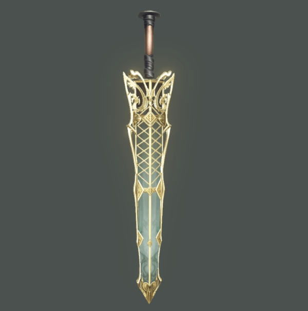

来网易前个人有些偏向技术的TA，工作中技术与美术各占比大概为60%和40%，写工具功能，做材质效果等，这次来网易因缘际会翻转了一下...
刚来的时候，同时跟过手游、端游和主机游戏，后面响应老大的号召，专门服务于天下3，一款有着历史悠久的端游，用的也是历史悠久的引擎Bigworld，很奇特的一段体验经历
天下3一直沿用早期的手绘效果，所有光影表现都画在一张贴图上。来这边后尝试主导美术品质升级的预研，从技术选型 ---> 美术制作 ---> 引擎最终实现（全靠代码手撸）。刚开始是带着一个刚毕业的美术制作，后面又加入了一位从影视过来的制作小伙伴（勾起了曾经从影视入行的经历
）
从基于物理渲染的技术理论及美术表现，逐步深入到PBR的具体实现算法，最终到引擎的代码实现，当然最重要的还是熟悉这个古老引擎Bigworld的shader代码结构。由于缺少图程小伙伴，路走的自然艰辛些，不过却让自己有机会从底层一窥究竟。
该上菜了，以下来源于Bigworld引擎内的预研效果，大部分效果还在调优推进中......
OOKKKK
